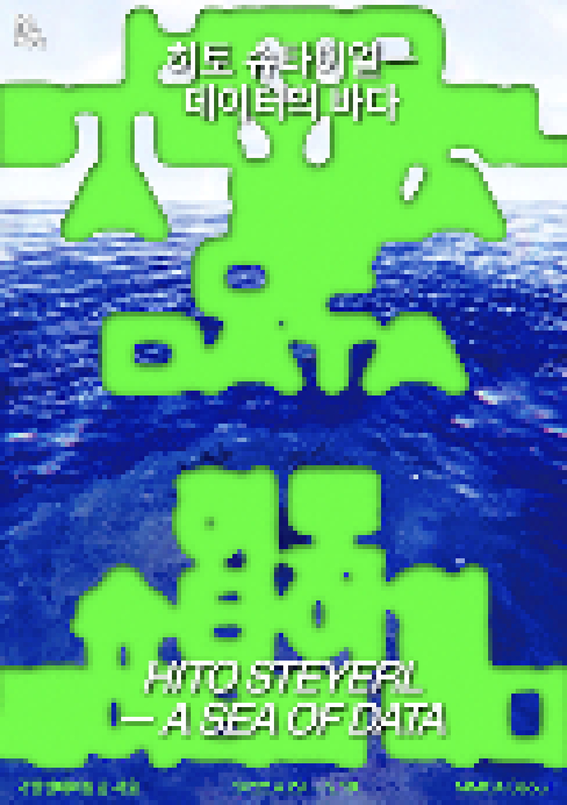

> title
히토 슈타이얼 - 데이터의 바다
> content
히토 슈타이얼(1966, 독일)은 디지털 기술, 글로벌 자본주의, 팬데믹 상황과 연관된 오늘날 가장 첨예한 사회, 문화적 현상을
영상 작업과 저술 활동을 통해 심도 있게 탐구해오고 있는 동시대
가장 영향력 있는
미디어 작가이다. 또한 예술, 철학, 정치 영역을 넘나들며 미디어, 이미지, 기술에 관한 흥미로운 논점을 던져주는 시각예술가이자 영화감독, 뛰어난 비평가이자 저술가이기도 하다. 또한 그는 현재
『이플럭스』를 비롯한
다양한 매체, 학술지 및 미술 잡지에 글을 기고하고 있다.
아시아 최초로 국립현대미술관에서 열리는 개인전 «히토 슈타이얼—데이터의 바다»는 ‹독일과 정체성›(1994)과 ‹비어 있는 중심›(1998) 등 다큐멘터리적 성격을 지닌 필름
에세이 형식의 1990년대 초기 영상
작품에서부터 인터넷, 가상현실, 로봇 공학, 인공지능 등 디지털 기술 자체를 인간과 사회와의 관계 속에서 재고하는 최근 영상 작업에 이르기까지 작가의 대표작 23점을 소개한다. 특히 이번
전시에서는 국립현대미술관
커미션 신작 ‹야성적 충동›(2022)이 최초로 공개된다.
전시의 부제 ‘데이터의 바다’는 슈타이얼의 논문 「데이터의 바다: 아포페니아와 패턴(오)인식」(2016) 에서 인용한 것으로, 오늘날 또 하나의 현실로 재편된 데이터 사회를
성찰적으로 바라보고자 하는 전시의 의도를
함축한다. 따라서 이번 전시는 빅데이터와 알고리즘에 의해 조정되고 소셜 미디어를 통해 순환하는 정보 및 이미지 생산과 이러한 데이터 재현 배후의 기술, 자본, 권력, 정치의 맥락을 비판적으로
바라보는 작가의 최근
영상 작업을 집중적으로 소개한다.
아울러 이번 전시는 오늘날 우리가 마주한 각종 재난과 전쟁의 소용돌이 속에서 기술은 인간을 구원할 수 있는가? 지구 내전, 불평등의 증가, 독점 디지털 기술로 명명되는 시대,
동시대 미술관의 역할은 무엇인가? 디지털
시각 체제는 인간과 사회에 대한 인식을 어떻게 변화시켰는가? 작가가 “빈곤한 이미지”라 명명한 저화질 디지털 이미지는 우리 삶의 양식과 어떻게 연결되는가? 등의 질문을 던진다. 이를 통해
가속화된 자본주의와
네트워크화된 공간 속에서 디지털 문화가 만들어낸 새로운 이미지, 시각성, 세계상 및 동시대 미술관의 위상에 대한 폭넓은 사유와 성찰의 기회를 마련하고자 한다.
